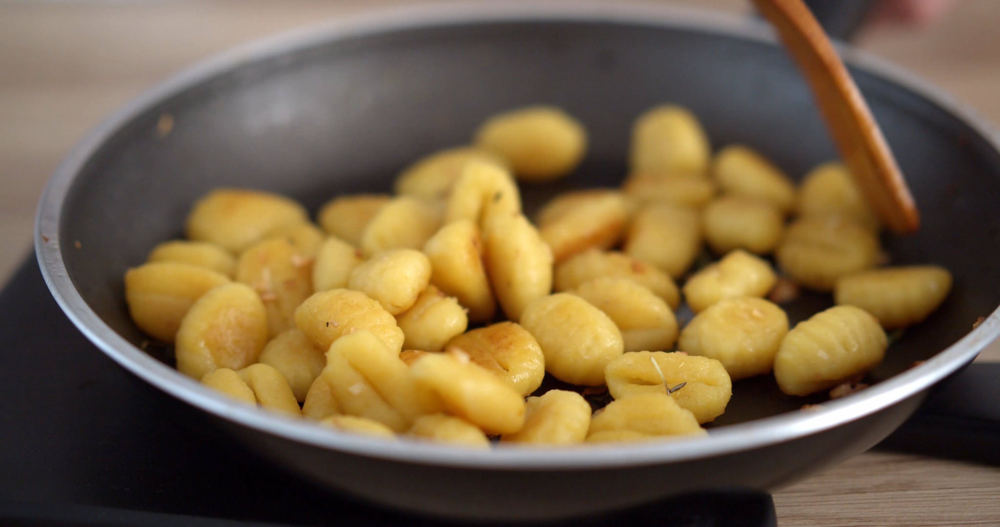

Gnocchi

Gnocchi(singular gnocco) are a varied family of dumpling in Italian cuisine.[6] They are made of small lumps of dough most traditionally composed of a simple combination of wheat flour, egg,salt, and potato
Ingredients
- 1 ½ tablespoons extra-virgin olive oil
- ½ onion, finely chopped
- 1 ½ (14.5 ounce) cans passata (crushed tomatoes)
- salt to taste
- 1 (18 ounce) package potato gnocchi
- 2 tablespoons grated Parmesan cheese
- 1 (4 ounce) ball fresh mozzarella, cubed
- 4 fresh basil leaves
Step-by-Step
- Heat olive oil in a saucepan over medium heat; cook onion until soft and translucent, about 5 minutes. Add passata and salt; simmer over low heat while you prepare the gnocchi.
- Bring a large pot of lightly salted water to a boil. Cook gnocchi in the boiling water until they float to the top, 2 to 4 minutes. Drain.
- Set an oven rack about 6 inches from the heat source and preheat the oven's broiler.
- Pour 1 ladle of tomato sauce into the bottom of a baking dish. Add gnocchi, remaining tomato sauce, and Parmesan cheese; toss to combine. Arrange cubes of mozzarella cheese evenly on top.
- Place baking dish in the oven and broil until mozzarella cheese is melted and sauce has slightly reduced, 5 to 10 minutes. Remove from oven and garnish with basil leaves before serving.